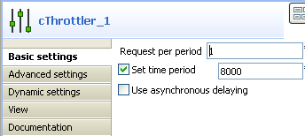
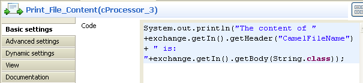
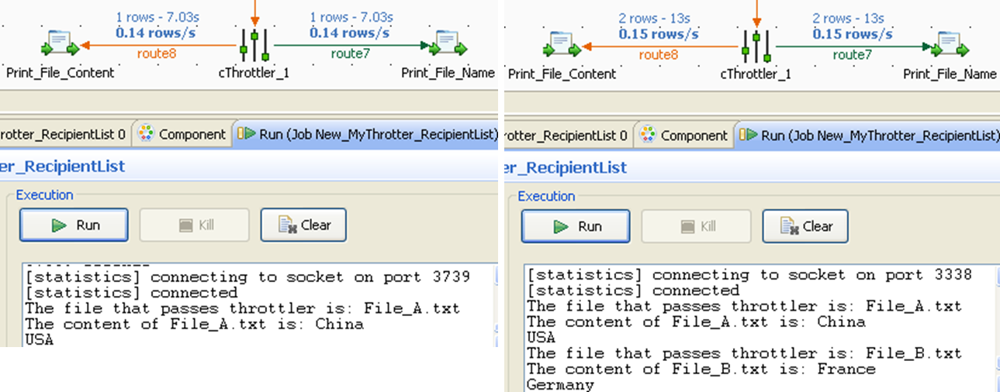

|
Component Family |
Processor | |
|
Function |
cThrottler is designed to limit the number of messages flowing to the subsequent endpoint. | |
|
Purpose |
cThrottler allows you to limit the number of messages flowing to a specific endpoint in order to prevent it from getting overloaded. | |
|
Basic settings |
Request per period |
The number of messages allowed to pass cThrottler within the defined time period. |
|
|
Set time period |
Select this check box to set the value of the time period (in milliseconds) and enable throttling. |
|
|
Use asynchronous delaying |
If this check box is selected, any messages that are delayed will be routed asynchronously using a scheduled thread pool. |
|
Usage |
Being a middle component, cThrottler allows you to limit the number of messages flowing to a specific endpoint in order to prevent it from getting overloaded. | |
| Connections | throttler | Select this link to route the throttled messages to the next endpoint. |
| Route | Select this link to route all the messages from the sender to the next endpoint. | |
|
Limitation |
n/a | |
In this scenario, a cThrottler component is used to reduce the number of messages flowing out within a time period.
To build the Route, do the following.
Drag and drop the components from the Palette onto the workspace: cThrottler, cFile and two cProcessor. Change the label of the cFile component to Read_Output. Change the labels of the two cProcessor components to Print_File_Name and Print_File_Content.
Link Read_Output to cThrottler using a Row > Route connection.
Link cThrottler to Print_File_Name using a Row > Throttler connection, and to Print_File_Content using a Row > Route connection.
Double-click Read_Output to open its Basic settings view in the Component tab.

In the Path field, type in the path to the source message, for example, "E:/data/output". Keep the default settings for other fields.
Double-click cThrottler to open its Basic settings view in the Component tab.
In the Request per period field, type in the number of messages allowed to pass the throttler per period, for example, 1.
In the Set time period field, type in the value of the period, for example, 8000.
Double-click Print_File_Name to open its Basic settings view in the Component tab.

In the Code box, enter the code below to get the name of the message that passes the throttler.
System.out.println("The file that passes throttler is: "+exchange.getIn().getHeader("CamelFileName"));Double-click Print_File_Content to open its Basic settings view in the Component tab.
In the Code box, enter the code below to get the content of the message that passes the throttler.
System.out.println("The content of " +exchange.getIn().getHeader("CamelFileName")+ " is: " +exchange.getIn().getBody(String.class));Press Ctrl+S to save your Route.
Click the Code tab at the bottom of the design workspace to check the generated code.

As shown above, the messages from
Read_Outputgo through throttling atcThrottler_1, with only(1)message allowed to leave the throttler within eachtimePeriodMillis(8000). Meanwhile, the filename and the content of the throttled message are printed out via the two processors.Press F6 to execute the Route.
As shown below, File_A.txt was delivered within the first time period while in the second period, File_B.txt was delivered as well.
